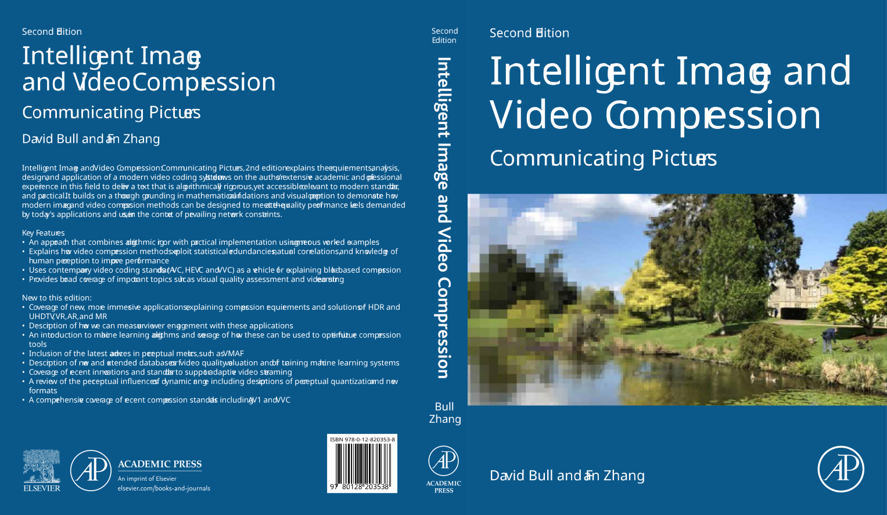

This book explains the requirements, analysis, design and application of a modern video coding system. It draws on the authors' extensive academic and professional experience in this field to deliver a text that is algorithmically rigorous yet accessible, relevant to modern standards and practical. It builds on a thorough grounding in mathematical foundations and visual perception to demonstrate how modern image and video compression methods can be designed to meet the rate-quality performance levels demanded by today's applications and users, in the context of prevailing network constraints.

Download the tutorial solutions (PDF)
VISTRA is a demonstration package giving an interactive overview of key principles of image and video compression:
The software and user manual can be downloaded here. There is also a mini demo for the DCT, available here.
David obtained his BSc from the University of Exeter, his MSc from the University of Manchester and his PhD from the University of Cardiff. He currently holds the Chair in Signal Processing at the University of Bristol. He is head of the Visual Information Laboratory, Director of Bristol Vision Institute and Director of the UK Government's £46m MyWorld Strength in Places programme. David has worked widely across image and video processing focused on streaming, broadcast and wireless applications. He has published over 600 academic papers, various articles and 3 books, and has given numerous invited and keynote lectures and tutorials. He has received numerous awards including the IEE Ambrose Fleming Premium for his work on Primitive Operator Digital Filters and a best paper award for his work on link adaptation for video transmission. David's work has been exploited commercially and he has acted as a consultant for companies and governments across the globe. In 2001 he co-founded ProVision Communication Technologies Ltd, who launched the world's first robust multi-source wireless HD sender for consumer use. His recent award-winning work on perceptual video compression using deep learning has produced world-leading rate-quality performance.
Aaron received his BSc (Hons) and MSc degrees from Shanghai Jiao Tong University (2005 and 2008 respectively), and his PhD from the University of Bristol (2012). He is currently a Research Fellow in the Visual Information Laboratory at the University of Bristol, working on video compression and immersive video processing. His research interests include perceptual video compression, video quality assessment and immersive video formats. Aaron has published over 50 academic papers and has contributed to two books on video compression. His work on super-resolution-based video compression has contributed to international standardisation processes and was a co-winner of the 2017 IEEE Grand Challenge on Video Compression.